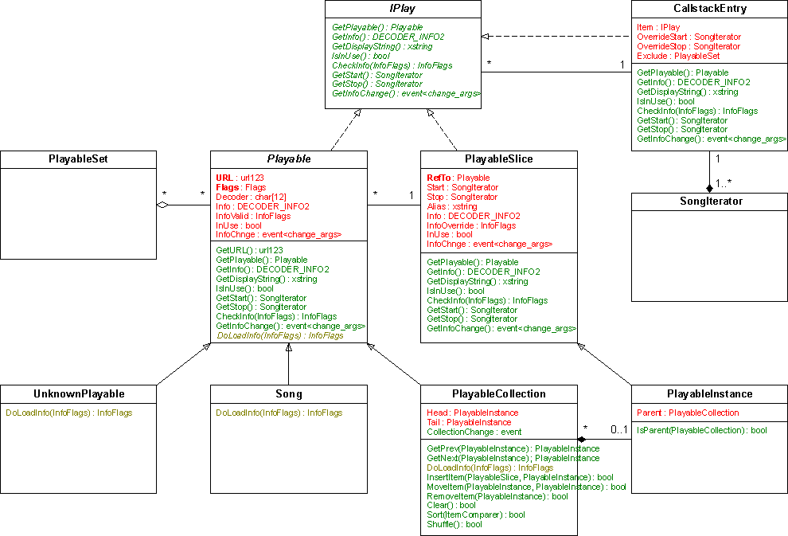

PM123 Playable object handling - Classes
Class Tree

class APlayable
This abstract base class is used as least common denominator
of all objects that can be played with PM123 in any way.
The concept behind all of these objects is
that they provide different kinds of information (see InfoFlags)
and all of these information is to be requested
before it is
used.
Failing to do so will cause undefined results like initial structures
or outdated content, but it will not cause
undefined behavior like an
application crash.
Services
- The only service that is directly provided by this class is
the asynchronous request service.
- For efficiency reasons the InfoChange
event is included as class member. It is required by any deriving class
anyway.
Properties
- The objects are reference countable,
i.e. they implement Iref_count. This belongs to
all derived classes. You must not use any of this classes without
holding a strong reference to it with an int_ptr<>
instance. However, this does not imply that all access have been done
through int_ptr<>.
E.g. in case of a function argument it is guaranteed that the callee
has a strong reference too, as long as you do not keep the reference
after the function returns.
- The objects are non-copyable. This
may be overridden in derived classes by taking the appropriate actions.
class
Playable
A Playable object is the 1:1 representation of a URL
in PM123. At most one Playable instance may exist for each
URL. This is
ensured by a private constructor and an instance repository. Use
GetByUrl to access or create instances of Playable.
If a playable object is enumerable (e.g. a playlist) it has an
additional extension object called PlaylistData. You cannot
access this data directly. It is only used internally to keep the
memory footprint of non-playlist objects small.
Services
- The object
repository,
- the interface to the plug-ins,
- the object state and
- the tracking of property changes.
Properties
- Playable objects are unique
in the way that for each (equivalent) URL only one object exists. This
causes all related information to be consistent in the whole
application.
class
PlayableSlice
A PlayableSlice is a reference
to an APlayable object which
only addresses a slice of the referenced object. It overrides the ITEM_INFO containing an
optional alias name optional start and a stop locations and
the
aggregate properties that depend on this values.
The locations are originally stored as PM123 location strings.
This causes a delayed verification of their values and allows to set
them while the referenced content is not yet available.
PlayableSlice objects may be nested.
In this case the outer PlayableSlice represents
the intersection of the two slices.
Services
- Methods to read the start and stop
location.
- Validation of the start and stop
position and
- calculation of the recursive playlist information based on
the slice.
- The PlayableSlice has an in-use
flag that implies that the underlying playable is in use but
not the other way around.
Properties
- In contrast to Playable a PlayableSlice
is non-unique and
- it is copyable. But note that
copying does not affect the InfoChange event
consumers.
class
PlayableRef
This is a refinement of PlayableSlice
that allows to override attribute and meta information too.
Services
- Methods to override properties.
- Notification logic that takes care of the overridden
information.
class
PlayableInstance
A PlayableInstance is playlist item, no
more, no less. It is mainly the same than PlayableRef,
but it keep track of the location in the playlist. A PlayableInstance
belongs to exactly one Playable of playlist type or it is
orphaned, i.e. removed from the playlist but still alive because of
strong references. This causes defined behavior when
removing a currently playing object from a playlist. Orphaned items
never can be reattached to a playlist.
Services
- Keep track of the index within the
surrounding collection.
Properties
- It is non-copyable.
- It weakly depends on a Playable
(playlist). You cannot get a strong reference to the enclosing
collection from that.
- A PlayableInstance may only be
created by a Playable,
but it may be removed from the collection and stay alive as long as
there are active referenced to it.
class Location
A Location is a pointer to a particular position
within any playable object. It may point to a time offset within a
song as well as to a deep location inside a nested playlist structure
and keep track of the navigation path.
Services
- A Location provides methods to navigate in
various ways.
- A Location can be (de)serialized from/to a string.
- It provides methods to calculate partial aggregate
information of its root that covers either the part before the
location or the part after the location.
Properties
- A Location always belongs to some Playable as root
object.
- It keeps only a weak reference to its root. This
reference is unchecked, so a location must not exceed the lifetime
of its root.
- Locations that belong to the same root are comparable.
class SongIterator
A SongIterator is a refinement of a Location
that provides additional Methods to keep track of the flattened
playlist offsets.
Services
- Calculate the offsets (songs and time) within the current root.
class CallstackEntry
This is only used by SongIterator
instances to keep track of the current call stack.
Services
- Provide offset information within the
current item.
Properties